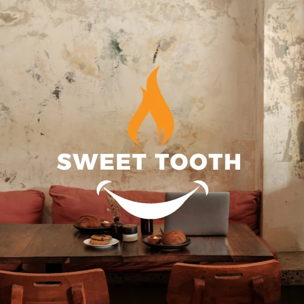
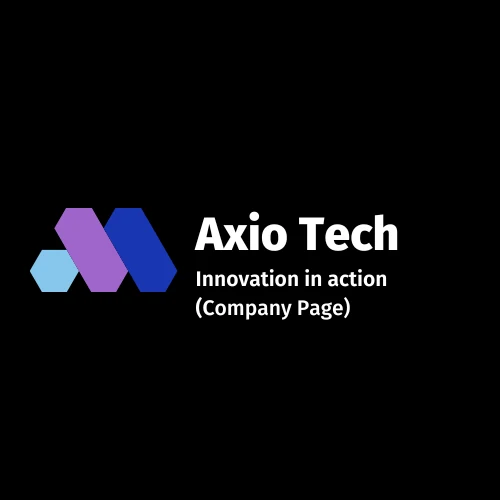
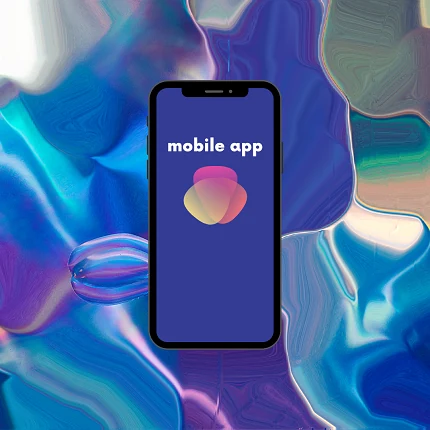

Restaurant
A restaurant website bringing menus, events and reservation information into one place.
Infrastructure, cloud
& automation.
I keep systems dependable, access organised and repetitive work automated. My work spans cloud administration, technical operations and practical uses of AI.
A selection of my frontend projects. Different ideas, a shared focus on clear interfaces and learning by building.

A restaurant website bringing menus, events and reservation information into one place.

A technology company concept, with space for its team, services and editorial content.
A word encoder and decoder built to practise JavaScript logic and interaction. A learning exercise, rather than a security tool.
An online store concept exploring how people browse products, place orders and move through checkout.
A course website concept using WordPress, with a focus on presenting learning content clearly.

A mobile application concept exploring an interface designed around a smaller screen.
My technical focus connects reliable systems, practical automation and the interfaces people use every day.
Identity, access and device administration with Azure Active Directory, Google Workspace and Intune. My broader cloud toolkit includes Azure, AWS, GCP and OCI.
Working through incidents, monitoring services, managing permissions and documenting what went wrong. I care about fixes that help both the system and the next person supporting it.
PowerShell scripting and workflow automation, supported by ongoing DevOps study. My toolkit includes Python, n8n, Git and CI/CD tools.
Building and maintaining web interfaces, connecting APIs and investigating integration issues. My frontend background helps me see technical problems from the user's side too.
I use AI tools to support troubleshooting, scripting and technical documentation. They help me explore a problem and check ideas; the output still needs a human review.
I’m interested in useful, repeatable workflows rather than adding AI for its own sake.
I’m Federico, an IT professional working across systems operations, cloud administration and automation , with a background in frontend development and technical support.
I enjoy tracing a problem to its cause, making a recurring task simpler, and leaving clear documentation behind. Working with users has taught me that a technically sound solution also needs to make sense to the person using it.
Outside of technology, I make time for football, gaming and yoga. Curiosity tends to follow me back to the keyboard.
Corporate IT, cloud identity, web development and technical support — the work behind my approach to systems and operations.
W2M World2Meet
Travel Arrangements
Provided corporate IT support for travel operations, covering business applications, identity and access management, and day-to-day operational support. Investigated incidents and coordinated with users and internal teams to keep business services running efficiently.
Yondbee Social Effects
Marketing Services & Software Consulting
Administered cloud identities, devices and hosting services for marketing and software consulting teams. Combined technical support with automation, API testing and application troubleshooting across connected platforms and services.
Publicate
Advertising Services
Combined web development and design for advertising and business websites, integrating frontend interfaces with external services and APIs. Maintained existing platforms while improving usability, performance and technical SEO.
Reby Urban Mobility
Technology, Information and Internet
Provided technical and customer support for an urban mobility platform through chat, email and phone channels. Investigated platform, integration and API-related issues while coordinating escalations with technical teams.
Formal study and focused training that support my work in systems, cloud and software.
Mundos E & UNC — In progress
TECLAB Higher Technical Institute
VIA University Campus Horsens — First semester completed
Oracle Next Education · Ministry of Education, Buenos Aires
Interested in working together? If you’d like to know more about my experience, projects or technical interests, let’s connect on LinkedIn.